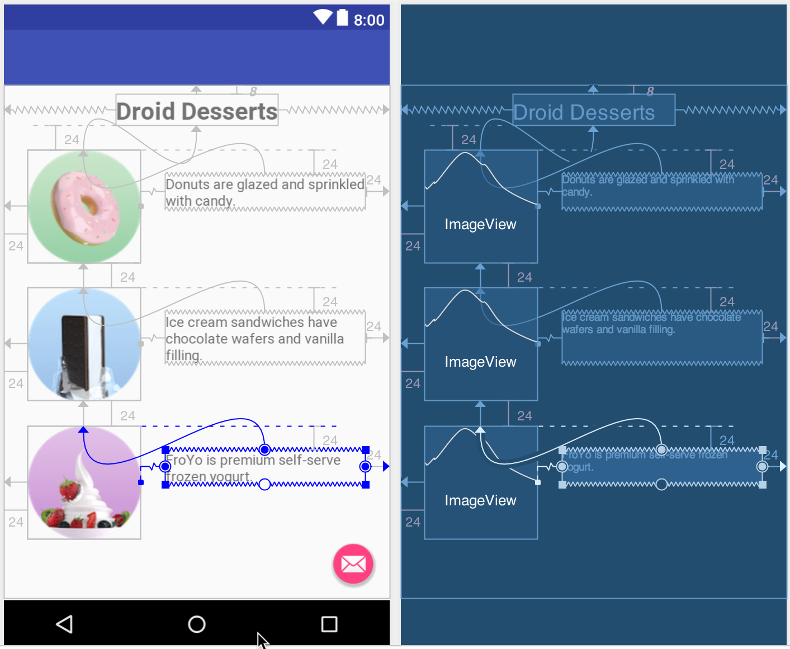

この実践的なコードラボは、Android Developer Fundamentals (Version 2) コースのUnit 2: User experience の一部です。コードラボを順番に学習していくことで、このコースを最大限に活用することができます。
- コース内のコードラボの完全なリストは、Codelabs for Android Developer Fundamentals (V2)を参照してください。
- すべてのコンセプトチャプター、アプリ、スライドへのリンクなど、講座の詳細については、Android Developer Fundamentals（第2版）をご覧ください。
注：このコースでは、「codelab」と「practical」という用語を使い分けています。
序章
Android搭載端末の画面に表示されるユーザーインターフェース（UI）は、ビューと呼ばれるオブジェクトの階層構造で構成されています。画面のすべての要素がビューです。
View クラスは、すべての UI コンポーネントの基本的な構成要素を表します。View は、Button 要素などのインタラクティブな UI コンポーネントを提供するクラスの基底クラスです。ボタンは、ユーザーがタップしたりクリックしたりしてアクションを実行できる UI 要素です。
ImageViewのような任意のViewを、タップやクリックが可能なUI要素に変えることができます。ImageViewの画像は、プロジェクトのdrawablesフォルダに保存する必要があります。
この実践編では、画像をユーザーがタップしたりクリックしたりできる要素として使う方法を学びます。
すでに知っておくべきこと
できるようになるはずです。
- テンプレートからAndroid Studioプロジェクトを作成し、メインレイアウトを生成します。
- エミュレータまたは接続されたデバイス上でアプリを実行します。
- レイアウトエディタとXMLコードを使用してUI要素を作成し、編集します。
findViewById()を使用してコードから UI 要素にアクセスします。- ボタンクリックを処理します。
- 乾杯メッセージを表示します。
- プロジェクトの描画可能なフォルダに画像を追加します。
あなたが学ぶこと
- アクションを実行するためのインタラクティブ要素として画像を使用する方法。
- レイアウトエディタで
ImageView要素に属性を設定する方法。 Toastメッセージを表示するためのonClick()メソッドを追加する方法。
あなたがすること
- 画像をインタラクティブな要素として使用するモックデザートオーダーアプリのAndroid Studioプロジェクトを新規作成します。
- 画像に異なる
Toastメッセージを表示するためのonClick()ハンドラを設定します。 - テンプレートで提供されているフローティングアクションボタンを変更して、別のアイコンを表示し、別のアクティビティを起動するようにします。
この実習では、デザートオーダーアプリを模したBasic Activityテンプレートを使って、新規アプリを作成します。下の図のように、画像をタップすることでアクション（ここではトーストのメッセージを表示）を行うことができます。また、ショッピングカートのボタンをタップして次のアクティビティに進むこともできます。
XMLレイアウトにandroid:onClick属性を追加することで、ビューをボタンのようにクリック可能にすることができます。例えば、ImageViewにandroid:onClickを追加することで、画像をボタンのように動作させることができます。
このタスクでは、カフェでデザートを注文するアプリのプロトタイプを作成します。基本アクティビティのテンプレートを基に新規プロジェクトを開始した後、"Hello World"のテキストビューを適切なテキストで修正し、ユーザーがタップできる画像を追加します。
1.1 新しいプロジェクトの開始
- アプリ名「Droid Cafe」でAndroid Studioの新規プロジェクトを開始します。
- 基本アクティビティ テンプレートを選択し、デフォルトのアクティビティ名（
MainActivity）を受け入れます。レイアウトファイルの生成と下位互換性（AppCompat）オプションが選択されていることを確認します。 - 終了をクリックしてください。
プロジェクトは、res > layoutフォルダ内の2つのレイアウトで開きます：アプリバーとフローティングアクションボタン（このタスクでは変更しません）のactivity_main.xmlと、レイアウト内の他のすべてのもののcontent_main.xmlです。4.4. content_main.xmlを開き、デザインタブ（まだ選択されていない場合）をクリックして、レイアウトエディタを表示します。5.5. レイアウトの"Hello World"テキストビューを選択し、属性ペインを開きます。6.textintro属性を以下のように変更します。
属性フィールド | 以下のように入力してください。 |
身分証明書 | テキストイントロダクション |
文章 | ハローワールドをドロイドのデザートに変更 |
テキストスタイル | Ｂ（太字 |
テキストサイズ | 二十四節気 |
これは、idをtextintroに設定したTextViewにandroid:id属性を追加し、テキストを変更し、テキストを太字にし、テキストサイズを24spに大きく設定します。
textintro TextViewの下部からレイアウトの下部に伸びる制約を削除して、TextViewがレイアウトの上部にスナップするようにして、以下のように上部余白に8（8dp）を選択します。

- 前回のレッスンでは、リテラルテキスト文字列から文字列リソースを抽出する方法を学びました。TextタブをクリックしてXMLコードに切り替え、
TextViewで"Droid Desserts"という文字列を抽出し、文字列リソース名としてintro_textを入力します。
1.2 画像を追加する
この例では、3つの画像（donut_circle.png、froyo_circle.png、icecream_circle.png）が用意されています。別の方法として、自分で作成した画像をPNGファイルで代用することもできますが、この例で使用するには113 x 113ピクセル程度のサイズが必要です。
このステップでは、レイアウトエディタの新しいテクニックも紹介します。
- 画像をプロジェクトにコピーするには、まずプロジェクトを閉じます。
- 画像ファイルをプロジェクトのdrawableフォルダにコピーします。プロジェクト内のdrawableフォルダを探すには、次のパスを使用します: project_name > app > src > main > res > drawable。
- プロジェクトを再開します。
- content_main.xmlファイルを開き、デザインタブをクリックします（まだ選択されていない場合）。
ImageViewをレイアウトにドラッグして、それ用のDonut_circle画像を選択し、下のアニメーション図に示すように、それをTextViewの上部とレイアウトの左側に24（24dp）の余白で拘束します。

- 属性］ペインで、属性に次の値を入力します。
属性フィールド | 以下のように入力してください。 |
身分証明書 | ドーナツ |
内容説明 | ドーナツは釉薬をかけてお菓子をふりかけています。 (フィールドにテキストをコピー/ペーストすることができます) |
- 2つ目の
ImageViewをレイアウトにドラッグして、icecream_circle画像を選択し、1つ目のImageViewの下側とレイアウトの左側に24(24dp)の余白で拘束します。
- 属性］ペインで、属性に次の値を入力します。
属性フィールド | 以下のように入力してください。 |
身分証明書 | アイスクリーム |
内容説明 | アイスクリームサンドにはチョコウエハースとバニラのフィリングが入っています。 (フィールドにテキストをコピー/ペーストすることができます) |
- 3つ目の
ImageViewをレイアウトにドラッグして、それ用のfroyo_circle画像を選択し、それを2つ目のImageViewの下側とレイアウトの左側に24(24dp)の余白で拘束します。 - 属性］ペインで、属性に次の値を入力します。
属性フィールド | 以下のように入力してください。 |
身分証明書 | フロヨー |
内容説明 |
(フィールドにテキストをコピー/ペーストすることができます) |
- レイアウトエディタの左上隅にある 警告アイコンをクリックすると、警告ウィンドウが開き、ハードコードされたテキストに関する警告が表示されます。
- 各ハードコードされたテキスト警告を展開し、警告メッセージの下部までスクロールして、以下のように「修正」ボタンをクリックします。
各ハードコードされたテキスト警告の修正は、その文字列の文字列リソースを抽出します。リソースの抽出ダイアログが表示され、文字列リソースの名前を入力できます。文字列リソースには以下の名前を入力します。
ひもじ | 以下の名前を入力してください。 |
ドーナツは釉薬をかけてお菓子をふりかけています。 | ドーナツ |
アイスクリームサンドにはチョコウエハースとバニラのフィリングが入っています。 | アイスクリームサンドウィッチ |
| フロヨー |
これでレイアウトは下の図のようになるはずです。
1.3 テキストの説明を追加する
このステップでは、各デザートのテキスト説明（TextView）を追加します。ImageView要素のcontentDescriptionフィールドの文字列リソースをすでに抽出しているので、各説明文TextViewに同じ文字列リソースを使用することができます。
- テキストビュー要素をレイアウトにドラッグします。
- 要素の左側をドーナツ
ImageViewの右側に、その上端をドーナツImageViewの上端に、どちらも24(24dp)の余白で拘束します。 - 要素の右側をレイアウトの右側に拘束し、同じ余白を24(24dp)にします。属性ペインの
IDフィールドにdonut_descriptionを入力します。下の図のように、新しいTextViewがドーナツ画像の横に表示されるはずです。
- 属性] ペインで、[インスペクタ] ペインの幅を [制約に一致] に変更します。
- 属性] ペインで、テキスト フィールドの文字列リソースの入力を開始します。@d.提案として表示される文字列リソース名（@string/donuts）をクリックします。
- 上記の手順を繰り返して、2つ目の
TextViewを追加します。このTextViewは、ice_cream ImageViewの右側と上部に拘束され、その右側はレイアウトの右側に拘束されます。属性ペインに以下のように入力します。
属性フィールド | 以下のように入力してください。 |
身分証明書 | アイスクリームの説明 |
左マージン、右マージン、上マージン |
|
レイアウト幅 | マッチ制約 |
文章 | 弦 |
- 上記の手順を繰り返して、
froyo ImageViewの右側と上部に拘束され、その右側がレイアウトの右側にある3つ目のTextViewを追加します。属性ペインに以下のように入力します。
属性フィールド | 以下のように入力してください。 |
身分証明書 | フロヨ記述 |
左マージン、右マージン、上マージン |
|
レイアウト幅 | マッチ制約 |
文章 | ストリング |
これで、以下のようなレイアウトになるはずです。

タスク1のソリューションコード
content.xmlファイルのXMLレイアウトを以下に示します。
<?xml version="1.0" encoding="utf-8"?>
<android.support.constraint.ConstraintLayout xmlns:android="http://schemas.android.com/apk/res/android"
xmlns:app="http://schemas.android.com/apk/res-auto"
xmlns:tools="http://schemas.android.com/tools"
android:layout_width="match_parent"
android:layout_height="match_parent"
app:layout_behavior="@string/appbar_scrolling_view_behavior"
tools:context="com.example.android.droidcafe.MainActivity"
tools:showIn="@layout/activity_main">
<TextView
android:id="@+id/textintro"
android:layout_width="wrap_content"
android:layout_height="wrap_content"
android:layout_marginTop="@dimen/margin_regular"
android:text="@string/intro_text"
android:textSize="@dimen/text_heading"
android:textStyle="bold"
app:layout_constraintLeft_toLeftOf="parent"
app:layout_constraintRight_toRightOf="parent"
app:layout_constraintTop_toTopOf="parent" />
<ImageView
android:id="@+id/donut"
android:layout_width="wrap_content"
android:layout_height="wrap_content"
android:layout_marginStart="@dimen/margin_wide"
android:layout_marginTop="@dimen/margin_wide"
android:contentDescription="@string/donuts"
app:layout_constraintStart_toStartOf="parent"
app:layout_constraintTop_toBottomOf="@+id/textintro"
app:srcCompat="@drawable/donut_circle" />
<ImageView
android:id="@+id/ice_cream"
android:layout_width="wrap_content"
android:layout_height="wrap_content"
android:layout_marginStart="@dimen/margin_wide"
android:layout_marginTop="@dimen/margin_wide"
android:contentDescription="@string/ice_cream_sandwiches"
app:layout_constraintStart_toStartOf="parent"
app:layout_constraintTop_toBottomOf="@+id/donut"
app:srcCompat="@drawable/icecream_circle" />
<ImageView
android:id="@+id/froyo"
android:layout_width="wrap_content"
android:layout_height="wrap_content"
android:layout_marginStart="@dimen/margin_wide"
android:layout_marginTop="@dimen/margin_wide"
android:contentDescription="@string/froyo"
app:layout_constraintStart_toStartOf="parent"
app:layout_constraintTop_toBottomOf="@+id/ice_cream"
app:srcCompat="@drawable/froyo_circle" />
<TextView
android:id="@+id/donut_description"
android:layout_width="0dp"
android:layout_height="wrap_content"
android:layout_marginEnd="@dimen/margin_wide"
android:layout_marginStart="@dimen/margin_wide"
android:layout_marginTop="@dimen/margin_wide"
android:text="@string/donuts"
app:layout_constraintEnd_toEndOf="parent"
app:layout_constraintStart_toEndOf="@+id/donut"
app:layout_constraintTop_toTopOf="@+id/donut" />
<TextView
android:id="@+id/ice_cream_description"
android:layout_width="0dp"
android:layout_height="wrap_content"
android:layout_marginEnd="@dimen/margin_wide"
android:layout_marginStart="@dimen/margin_wide"
android:layout_marginTop="@dimen/margin_wide"
android:text="@string/ice_cream_sandwiches"
app:layout_constraintEnd_toEndOf="parent"
app:layout_constraintStart_toEndOf="@+id/ice_cream"
app:layout_constraintTop_toTopOf="@+id/ice_cream" />
<TextView
android:id="@+id/froyo_description"
android:layout_width="0dp"
android:layout_height="wrap_content"
android:layout_marginEnd="@dimen/margin_wide"
android:layout_marginStart="@dimen/margin_wide"
android:layout_marginTop="@dimen/margin_wide"
android:text="@string/froyo"
app:layout_constraintEnd_toEndOf="parent"
app:layout_constraintStart_toEndOf="@+id/froyo"
app:layout_constraintTop_toTopOf="@+id/froyo" />
</android.support.constraint.ConstraintLayout>ユーザーがタップ（またはクリック）できるようにビューをクリック可能にするには、XMLレイアウトにandroid:onClick属性を追加し、クリックハンドラを指定します。例えば、ImageViewにandroid:onClickを追加することで、ImageViewを単純なButtonのように動作させることができます。このタスクでは、レイアウト内の画像をクリック可能にします。
2.1 Toastメソッドを作成する
このタスクでは、各画像がクリックされたときに呼び出すandroid:onClick属性の各メソッドを追加します。このタスクでは、これらのメソッドは、どの画像がタップされたかを示すToastメッセージを表示するだけです。(別の章では、別のアクティビティを起動するためにこれらのメソッドを変更します)。
- Javaコードで文字列リソースを使用するには、まずstring
.xmlファイルに追加する必要があります。プロジェクト] > [Android] ペインで [res] > [値] を展開し、string.xml を開きます。Toastメッセージに表示する文字列のために、以下の文字列リソースを追加します。
<string name="donut_order_message">You ordered a donut.</string>
<string name="ice_cream_order_message">You ordered an ice cream sandwich.</string>
<string name="froyo_order_message">You ordered a FroYo.</string>- MainActivityを開き、以下の
displayToast()メソッドをMainActivityの最後(閉じ括弧の前)に追加します。
public void displayToast(String message) {
Toast.makeText(getApplicationContext(), message,
Toast.LENGTH_SHORT).show();
} MainActivity内の任意の位置にこのメソッドを追加することができましたが、テンプレートによってMainActivity内ですでに提供されているメソッドの下に独自のメソッドを配置するのが最善の方法です。
2.2 クリックハンドラの作成
それぞれのクリック可能な画像は、クリックハンドラ-android:onClick属性が呼び出すメソッド-を必要とします。android:onClick属性から呼ばれるクリックハンドラは、publicで、voidを返し、その唯一のパラメータとしてViewを定義しなければなりません。クリックハンドラを追加するには、以下の手順に従ってください。
- 以下の
showDonutOrder()メソッドをMainActivityに追加します。このタスクでは、先に作成したdisplayToast()メソッドを使用して、Toastメッセージを表示します。
/**
* Shows a message that the donut image was clicked.
*/
public void showDonutOrder(View view) {
displayToast(getString(R.string.donut_order_message));
}最初の3行はJavadoc形式のコメントで、コードを理解しやすくし、コードのドキュメント生成にも役立ちます。新しいメソッドを作成するたびに、このようなコメントを追加するのがベストプラクティスです。コメントの書き方の詳細については、JavadocツールのためのDocコメントの書き方を参照してください。
- デザートごとにMainActivityの最後にメソッドを追加します。
/**
* Shows a message that the ice cream sandwich image was clicked.
*/
public void showIceCreamOrder(View view) {
displayToast(getString(R.string.ice_cream_order_message));
}
/**
* Shows a message that the froyo image was clicked.
*/
public void showFroyoOrder(View view) {
displayToast(getString(R.string.froyo_order_message));
}- (オプション) [コード] > [コードの再フォーマット]を選択すると、
MainActivityで追加したコードが標準に準拠し、読みやすくなるように再フォーマットされます。
2.3 onClick属性の追加
このステップでは、content_main.xmlレイアウトの各ImageView要素にandroid:onClickを追加します。android:onClick属性は、各要素のクリックハンドラを呼び出します。
- content_main.xmlファイルを開き、レイアウトエディタでテキストタブをクリックしてXMLコードを表示します。
donutImageViewにandroid:onClick属性を追加します。入力すると、クリックハンドラを示すサジェストが表示されます。showDonutOrderクリックハンドラを選択します。これでコードは以下のようになるはずです。
<ImageView
android:layout_width="wrap_content"
android:layout_height="wrap_content"
android:padding="10dp"
android:id="@+id/donut"
android:layout_below="@id/choose_dessert"
android:contentDescription="@string/donut"
android:src="@drawable/donut_circle"
android:onClick="showDonutOrder"/>最後の行(android:onClick="showDonutOrder")は、クリックハンドラ(showDonutOrder)をImageViewに割り当てています。
- (オプション) [コード] > [コードの再フォーマット] を選択して、
content_main.xmlで追加した XML コードを標準に準拠して読みやすくするために再フォーマットします。Android Studio は自動的にandroid:onClick属性を数行上に移動して、前置きとしてandroid:を持つ他の属性と結合します。 - 同じ手順で、
android:onClick属性をice_creamとfroyo ImageView要素に追加します。showDonutOrderとshowFroyoOrderのクリック ハンドラを選択します。オプションでCode > Reformat Codeを選択してXMLコードを再フォーマットすることができます。コードは以下のようになります。
<ImageView
android:id="@+id/ice_cream"
android:layout_width="wrap_content"
android:layout_height="wrap_content"
android:layout_marginStart="@dimen/margin_wide"
android:layout_marginTop="@dimen/margin_wide"
android:contentDescription="@string/ice_cream_sandwiches"
android:onClick="showIceCreamOrder"
app:layout_constraintStart_toStartOf="parent"
app:layout_constraintTop_toBottomOf="@+id/donut"
app:srcCompat="@drawable/icecream_circle" />
<ImageView
android:id="@+id/froyo"
android:layout_width="wrap_content"
android:layout_height="wrap_content"
android:layout_marginStart="@dimen/margin_wide"
android:layout_marginTop="@dimen/margin_wide"
android:contentDescription="@string/froyo"
android:onClick="showFroyoOrder"
app:layout_constraintStart_toStartOf="parent"
app:layout_constraintTop_toBottomOf="@+id/ice_cream"
app:srcCompat="@drawable/froyo_circle" />各ImageViewのandroid:layout_marginStart属性は赤で下線が引かれていることに注意してください。この属性はImageViewの"開始"マージンを決定します。
- android:
layout_marginStart属性の「android:preface」の部分をクリックすると、下の図のようにその横に赤い電球の警告が表示されます。

- アプリを以前のバージョンのAndroidと互換性を持たせるには、この属性の各インスタンスの赤い球根をクリックし、Set layout_marginLeft...を選択して、layout
_marginLeftを"@dimen/margin_wide"に設定します。 - アプリを実行します。
ドーナツ、アイスクリームサンド、またはフロヨーの画像をクリックすると、下図のように注文に関するトーストメッセージが表示されます。
タスク2のソリューションコード
このタスクの解決コードは、Android StudioプロジェクトDroidCafeのMainActivityのコードとレイアウトに含まれています。
画面下に表示されるメールアイコンのフローティングアクションボタンをクリックすると、MainActivityのコードは、スマートフォンであれば画面下から、大きなデバイスであれば左下から開き、数秒後に閉じるドロワーに簡単なメッセージを表示します。これはスナックバーと呼ばれています。これは、操作に関するフィードバックを提供するために使用されます。詳しくは、スナックバーを参照してください。
他のアプリがどのようにフローティングアクションボタンを実装しているかを見てみましょう。たとえば、Gmail アプリには新しい電子メール メッセージを作成するためのフローティング アクション ボタンがあり、連絡先アプリには新しい連絡先を作成するためのフローティング アクション ボタンがあります。フローティング アクション ボタンの詳細については、「FloatingActionButton」を参照してください。
このタスクでは、FloatingActionButton のアイコンをショッピングカート に変更し、FloatingActionButton のアクションを変更して新しいアクティビティを起動します。
3.1 新しいアイコンを追加する
別のレッスンで学んだように、Android Studioのアイコンのセットからアイコンを選択することができます。以下の手順に従ってください。
- プロジェクト > Android ペインで res を展開し、描画可能なフォルダを右クリック（または Control キーを押しながら）します。
- 新規作成 > イメージアセットを選択します。画像アセットの設定ダイアログが表示されます。
- ダイアログ上部のドロップダウンメニューからアクションバーとタブアイコンを選択します。(アクションバーはアプリバーと同じものであることに注意してください)。
- 名前欄の ic_action_name を ic_shopping_cart に変更します。
- クリップアート画像（Clipart:の横にあるAndroidロゴ）をクリックして、クリップアート画像をアイコンとして選択します。アイコンのページが表示されます。ショッピングカートのアイコンなど、フローティングアクションボタンに使いたいアイコンをクリックします。
- テーマ] ドロップダウンメニューから [HOLO_DARK] を選択します。これにより、アイコンが暗い色（または黒）の背景に対して白に設定されます。次へ] をクリックします。
- アイコンパスの確認ダイアログで終了をクリックします。
ヒント。アイコンを追加する方法の詳細については、「Image Asset Studioでアプリのアイコンを作成する」を参照してください。
3.2 アクティビティの追加
前のレッスンで学んだように、アクティビティはアプリ内の1つの画面を表し、ユーザーが1つの集中したタスクを実行できます。MainActivity.javaという1つのアクティビティをすでに持っています。次に、OrderActivity.javaという別のアクティビティを追加します。
- 左側の列にあるcom.example.android.droidcafeフォルダを右クリック（またはControlキーを押しながらクリック）し、「新規作成」→「アクティビティ」→「空のアクティビティ」を選択します。
- アクティビティ名を OrderActivity に、レイアウト名を activity_order に編集します。他のオプションはそのままにして、[完了] をクリックします。
OrderActivityクラスは、javaフォルダ内のMainActivityと一緒にリストアップされ、activity_order.xmlはレイアウトフォルダ内にリストアップされるようになりました。Empty Activityテンプレートには、これらのファイルが追加されました。
3.3 アクションを変更する
このステップでは、新しいアクティビティを起動するために、FloatingActionButtonのアクションを変更します。
- MainActivityを開きます。
onClick(View view)メソッドを変更して、OrderActivityの開始を明示的に意図するようにしました。
public void onClick(View view) {
Intent intent = new Intent(MainActivity.this, OrderActivity.class);
startActivity(intent);
}- アプリを実行します。ショッピングカートのアイコンを使用するフローティングアクションボタンをタップします。空のアクティビティ（
OrderActivity）が表示されます。戻るボタンをタップしてMainActivityに戻ります。
タスク3のソリューションコード
このタスクのソリューションコードは、Android StudioプロジェクトDroidCafeのコードとレイアウトに含まれています。
注: コーディングの課題はすべて任意であり、後のレッスンの前提条件ではありません。
課題: DroidCafe アプリの MainActivity は、OrderActivity と呼ばれる 2 番目の Activity を起動します。アクティビティから別のアクティビティにデータを送信する方法を別のレッスンで学びました。MainActivityで選択したデザートの注文メッセージをOrderActivityレイアウトの上部にある新しいTextViewに送信するようにアプリを変更します。
OrderActivityレイアウトの一番上に、idorder_textviewでTextViewを追加します。MainActivityに、Toastに表示される注文メッセージのためのメンバ変数（mOrderMessage）を作成します。showDonutOrder()、showIceCreamOrder()、および showFroyoOrder() の各クリック ハンドラを変更して、トーストを表示する前にメッセージ文字列 mOrderMessage を割り当てるようにします。例えば、次の例では、donut_order_message文字列をmOrderMessageに代入し、トーストを表示しています。
mOrderMessage = getString(R.string.donut_order_message);
displayToast(mOrderMessage);MainActivityの先頭にEXTRA_MESSAGEというpublic static final Stringを追加して、intent.putExtraのキーを定義します。
public static final String EXTRA_MESSAGE =
"com.example.android.droidcafe.extra.MESSAGE";public static final String EXTRA_MESSAGE =
"com.example.android.droidcafe.extra.MESSAGE"
onClick() メソッドを変更し、OrderActivity を起動する前に intent.putExtra ステートメントを含めるようにしました。
public void onClick(View view) {
Intent intent =
new Intent(MainActivity.this, OrderActivity.class);
intent.putExtra(EXTRA_MESSAGE, mOrderMessage);
startActivity(intent);
}OrderActivityでは、onCreate()メソッドに以下のコードを追加して、Activityを起動したIntentを取得し、文字列メッセージを抽出し、TextViewのテキストをメッセージに置き換えます。
Intent intent = getIntent();
String message = "Order: " +
intent.getStringExtra(MainActivity.EXTRA_MESSAGE);
TextView textView = findViewById(R.id.order_textview);
textView.setText(message);- アプリを起動します。デザート画像を選択した後、フローティングアクションボタンをタップして
OrderActivityを起動します。
チャレンジソリューションコード
Android Studioプロジェクト。DroidCafeChallenge
- プロジェクトで画像を使用するには、プロジェクトのdrawableフォルダ（project_name > app > src > main > res > drawable）に画像をコピーします。
ImageViewを定義して、ImageViewをレイアウトにドラッグし、そのImageView用の画像を選択して使用します。android:onClick属性を追加して、ImageViewをボタンのようにクリックできるようにします。クリックハンドラの名前を指定します。- アクティビティ内にクリックハンドラを作成してアクションを実行します。
- アイコンを選択します。プロジェクト > Android ペインで res を展開し、描画可能なフォルダを右クリック（または Control キーを押しながらクリック）し、新規作成 > イメージアセットを選択します。ドロップダウンメニューでアクションバーとタブアイコンを選択し、クリップアート画像（Clipart:の隣にあるAndroidロゴ）をクリックして、アイコンとしてクリップアート画像を選択します。
- 別のアクティビティを追加します。プロジェクト > Android ペインで、java フォルダ内のパッケージ名フォルダを右クリック（または Control キーを押しながらクリック）し、「新規作成」 > 「アクティビティ」を選択し、アクティビティのテンプレート（Empty Activity など）を指定します。
- 乾杯メッセージを表示します。
Toast.makeText(getApplicationContext(), message,
Toast.LENGTH_SHORT).show();関連するコンセプトのドキュメントは「4.1: ボタンとクリック可能な画像」にあります。
Android Studioのドキュメント。
Androidの開発者向けドキュメント。
- ユーザーインターフェースとナビゲーション
- レイアウトエディタでUIを構築する
- でレスポンシブ UI を構築する 制約レイアウト
- レイアウト
- ビュー
- ボタン
- イメージビュー
- テキストビュー
- ボタン
- スタイルとテーマ
他にもあります。
このセクションでは、インストラクターが主導するコースの一部として、このコードラボを通して作業する学生のための可能な宿題をリストアップします。以下のことをするかどうかはインストラクター次第です。
- 必要に応じて宿題を出す。
- 宿題の提出方法を学生に伝える。
- 宿題を採点します。
講師は、彼らが望むように少しまたは多くのようにこれらの提案を使用することができますし、彼らが適切であると感じる他の宿題を割り当てるために自由に感じるはずです。
もしあなた自身でこのコードラボに取り組んでいるのであれば、これらの宿題を使ってあなたの知識をテストしてみてはいかがでしょうか。
アプリを変更する
DroidCafeアプリは端末やエミュレータを縦向きにしても問題なく表示されますが、端末やエミュレータを横向きにすると2枚目と3枚目が表示されません。しかし、デバイスやエミュレータを横向きにすると、2枚目と3枚目の画像が表示されません。
- DroidCafeアプリプロジェクトを開く（またはダウンロードする）。
横向き用のレイアウトバリアントを作成します：content_main.xml (land)- 3つの画像と3つのテキストの説明から制約を削除します。
- レイアウトバリアントで3つの画像をすべて選択し、下の図のように画面全体に均等に分散させるために、 パックボタンで「水平展開」を選択します。
- 下図のように、画像の側面と底面にテキスト記述を拘束してください。
以下の質問に答えてください。
質問1
Android Studioプロジェクトに画像を追加するには？1つを選択します。
- 各画像をレイアウトエディタにドラッグします。
- 画像ファイルをプロジェクトの描画可能なフォルダにコピーします。
ImageButtonをレイアウトエディタにドラッグします。- 新規作成] > [画像アセット]を選択し、画像ファイルを選択します。
質問2
ImageViewを単純なButtonのようにクリックできるようにするには？1つ選んでください。
- レイアウト内の
ImageViewにandroid:contentDescription属性を追加し、アクティビティ内のクリックハンドラを呼び出すために使用します。 - レイアウト内の
ImageViewにandroid:src属性を追加し、アクティビティ内のクリックハンドラを呼び出すために使用します。 - レイアウト内の
ImageViewにandroid:onClick属性を追加し、アクティビティ内のクリックハンドラを呼び出すために使用します。 - レイアウト内の
ImageViewにandroid:id属性を追加し、アクティビティ内のクリックハンドラを呼び出すために使用します。
質問3
レイアウト内の属性から呼び出されるクリックハンドラに適用されるルールはどれか？1つ選びなさい。
- クリックハンドラメソッドは、イベントリスナー
View.OnClickListenerを含まなければなりません。 - クリックハンドラメソッドは
publicで、voidを返し、唯一のパラメータとしてViewを定義しなければなりません。 - クリックハンドラは
View.OnClickListenerクラスをカスタマイズし、そのクリックハンドラをオーバーライドして何らかのアクションを実行する必要があります。 - クリックハンドラメソッドはプライベートでなければならず、
Viewを返す必要があります。
アプリを提出して採点を受ける
学年別ガイダンス
- アプリを実行します。
- 水平方向に切り替えると、新しいレイアウトのバリエーションが表示されます。下の図のようになるはずです。
Android Developer Fundamentals (V2)コースの次の実践的なコードラボを見つけるには、Codelabs for Android Developer Fundamentals (V2)を参照してください。
概念章、アプリ、スライドへのリンクを含むコースの概要については、Android Developer Fundamentals (Version 2)を参照してください。